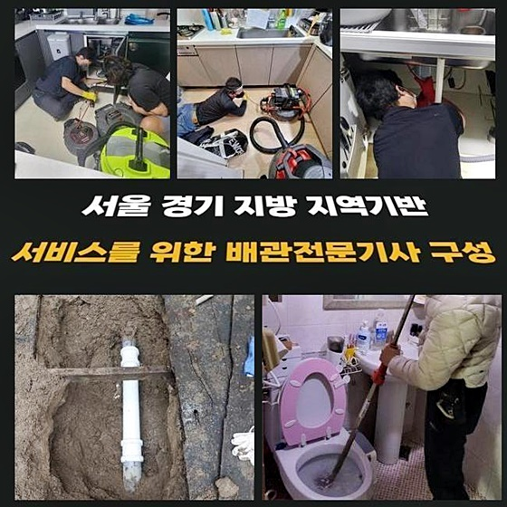
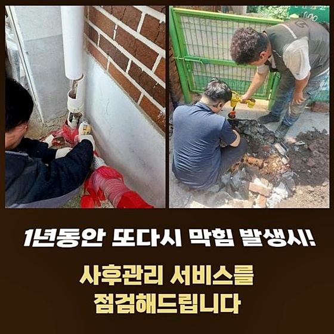
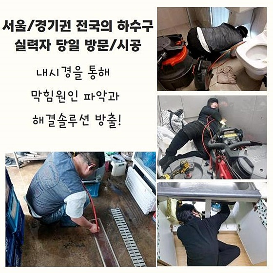
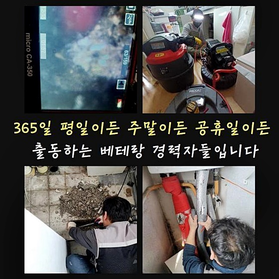
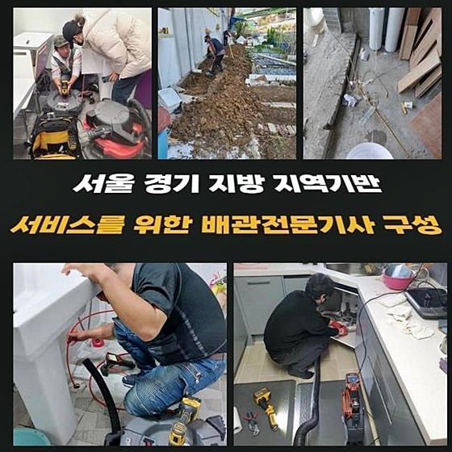

🏠 수원 정자1동오수관뚫음 정자3동 하수구뚫는비용 물샘전문업체
수원 하수구막힘 전문 시공 후기

📋 작업 개요
- 위치: 수원
- 서비스 유형: 하수구막힘, 배관막힘, 맨홀막힘, 집수정막힘, 누수수리, 뚫는업체, 배관청소, 고압세척, 설비공사, 배관보수, 악취차단
- 작업 일시: 2024. 9. 4. 14:37
- 업체명: 하수구수사대 (010-5615-2118)
🔍 문제 상황
수원 정자1동오수관뚫음 정자3동 하수구뚫는비용 물샘전문업체
하루를 살아가면서 물이 빠진다는 것은 단 하루라도 용납할 수 없습니다
그렇기에 물을 쓰면서 바깥으로 버려주는 하수관로 관리 문제도 필히 신경써야 하는데요
경각심을 느끼지 못하고 물 이외의 물질을 넣는다면 시간이 지나면 하수구막힘이라는 손 쓸 수 없는 상황을 직면하게 될 겁니다
이번 소개할 장소는 식당이었는데 하수로가 갑자기 중단됐다는 상황을 전달받고서 속히 해당 장소로 향했어요
손님을 맞이하는 곳에서 하수관로가 봉쇄된다면 고객을 받을 수 없기 때문에 조속히 손봐드리려고 빠른 행동으로 준비했습니다
이런 어려움이 형성될 수 밖에 없었던 문제점을 짚어내고 책정될 공사비용에 관하여 전달드렸죠
당장 저녁 장사를 하셔야한다며 빨리 꼼꼼히 봐달라고 요구하셔서 전문적 서비스를 시행했습니다
장비부터 넣고보는 게 아니라 무슨 연유로 막혀버렸는지 상세히 판단하기 위하여 우선 파이프 내측을 진단했습니다
반드시 검사를 우선하는 이유는 잘못된 기기의 사용으로 괜찮았던 시설물까지도 공연히 파괴되어버릴 상황에 대하여 대책을 세우기 위해서입니다
물이 거꾸로 치솟기까지 해서 많은 오염이 생긴 현장이었는데 급한 마음만 앞세워 급한 부위만 뚫어낸다면 빠르면 며칠 안에 청소를 하나마나 같은 사고가 나타날 수 밖에 없어요

🔎 원인 분석
💡 전문가 진단: 정밀 진단 장비를 사용하여 슬러지의 고착 여부를 판명하고 타격/세척 작업을 실시했습니다.
다시 고생하지 않으려면 처리속도만 올리려하지 말고 막히게 만든 원인을 색출해서 누락분이 없게끔 해결을 봐야 합니다
막히다 못해 넘치는 증상까지도 동반된다면 깜짝 놀라서 빨리 처리하려고 마음을 먹으시지만 일부는 이러다 말겠지 여기시면서 흐린 눈을 일삼는 분들도 계십니다
관로에 더러운 찌꺼기가 계속해서 더해지다보면 마지막에는 단순한 청소 이상의 과정을 이어가야만 하니 곤란해 질 것입니다
책임감있게 담당해 주는 곳을 신중하게 정한 다음 빠르게 전화하는 것 둘 다 필요하다는 점을 새겨두시면 도움이 될 거예요
식당의 하수구 곤란을 처리하기 위하여 전용 내시경기기를 주입시켜서 무슨 상황인지를 점검하니 중간 정도의 깊이에 오염 요소들이 들러붙어서 약간의 공간도 없이 막혔던 거죠
문제성 부위를 해결해 드리려고 고압수로 세척하는 작업 등 여러가지 작업 과정을 거쳐서 통수를 달성시킬 수 있었어요
이물질의 강도와 찌꺼기의 종류가 뭔지에 따라 결정하게 되는 시공의 유형도 바뀔 수 있어요
대규모의 식당인데다 손질이 필요한 하수구의 직경도 널찍했기에 만만치 않을 것 같았지만 큰 건더기를 건져올리고 하나씩 처리해 나갑니다
영상 장비를 통하여 실내와 바깥 집수정까지 검사해본 결과 기름기랑 각종 음식물 잔해들이 머물러서 가득 채워진 상황이었죠
상가에서 주로 보이는 문제되는 존재들인데 다같이 발견된 곳이니 심각도가 더 짙어지면서 완전 마비가 되어 버린겁니다
파이프라인에 고인 대상물이 뭘지 고객님께도 중간 보고를 드리고 뚫는 툴을 활용해서 뚫음업무를 이어갔어요
작업지까지 가져갔던 차량에서 장치를 빼내서 바로 작동할 수 있게 해줍니다

🔧 작업 과정
영역이 넓고 복잡한 곳이면 현장이라면 옥외 배수시설도 원거리에 있습니다
실내 쪽에서 중앙관까지 위치를 옮겨가면서 배열된 모든 맨홀 커버를 차례로 개방하면서 어떤 구간들이 문제를 안고있나 확정짓기까지는 오래 걸려요!
시간적 효율을 확보하려면 첫 시작부터 야외 장소부터 깨끗하게 치워나갑니다
이번 시공 전까지는 관통기를 이용해 보합세를 유지 하실 수 있었다곤 하지만 이는 시설물의 손상을 야기 만드는 것이라고 무시해서는 안됩니다
특히 영업장의 사장님들과 대화하면 근처에서 뚫음 도구들을 되는대로 적용시키면서 물이 뻥 뚫리길 원하시는데 시간과 노력을 투자하여 시설이 잘 고쳐진다면 운이 좋은 것이고 그마저도 오래 못가요
데이터 통계를 보자면 과반수 이상은 쳇바퀴 구르듯 재발을 피하지 못해요
허튼 돈을 쓸 수 있으니 비싸지 않게 책정된 청소비용으로 보완 조치를 해주는 곳에 의뢰해서 남김없이 치워주는 과정이 예방적으로도 당연히 더 우수해요
이번 작업지도 고객님께서 급한 불만 꺼오시다가 도저히 방법이 없다 판단되어 다급히 저희를 찾아주셨던 거죠
관통기나 뚫어뻥 등으로는 배수되는 물의 속도도 느릿할테고 내부에 고여있었던 잔해들 마저도 빼내지 못할 것입니다
긴 노즐의 끝에 달린 작은 촬영기기로 발굴한 오물이 가장 집적된 곳에 플렉스샤프트를 배정하여 조금씩 뭉친 곳을 와해시켜요
장기간 정체되어서 그런지 원활하게 분리되지 않았으나 이때 포기하지 않고 심한 쪽을 집중적으로 공격합니다
노즐을 넣고 꺼내기를 책임감있게 담당해준 결과로 통로를 확보할 수 있었고 내압이 정상화되어 정지되어 있었던 뒤섞인 채 머물러 있던 물티슈 및 이물질이 방출됐어요
진입하는 도중에 삐걱대긴 했었지만 고착화된 대상이 있는지 보려고 영상 촬영기를 통해 내부 상황을 이해하고 가장 걸맞는 방식을 택하여 다양한 기술력과 도구를 십분 활용했어요
차단된 부분을 개선시키고 중앙시스템까지의 길을 열어줬습니다
그 다음은 건물 뒤의 보수를 위해 마련된 시설인 사각 하수도를 볼 수 있는 위치에 서서 철제 커버를 모두 열어서 문제성의 지점을 타겟팅해서 강력한 수압을 발사합니다
충분하게 시원스럽다고 보이지 않았기에 바깥까지 오염됐을 거라는 확실한 의심이 되었으므로 양해를 구하고 옥외까지도 손을 봐드렸던 것입니다
마감은 늦어졌지만 물을 모아주는 집수정 시설을 체크하지 않았으면 다시 작업지를 방문 해드렸을게 예상됐을 정도로 거대한 오물 덩어리가 부착되어 있었어요
실내 세정을 한 다음에도 물의 경로가 트이긴 했으나 더불어 집수정까지 케어하니 물이 제속도를 찾았습니다
저희 선에서 가볍게 봐드리는 서비스의 일환까지도 마찬가지로 동의를 구하고 나서 작업을 실시하고 있으니 과한 업무를 이어가지 않을까 하는 불안감은 가라앉히시면 좋겠네요


✅ 작업 완료
오랫동안 누적되어 온 노폐물이 있어서 충격적일 정도로 중단되지 않고 침전물이 유발되는 현장이었지만 모든 집수관들을 놓치지 않고 쾌적한 환경을 만들어 드렸으니 멀쩡한 기능과 외관을 복구했어요
끝으로 고객님분께 생활의 루틴을 조언드렸더니 감사하다고 말씀하시곤 앞으로 규칙적인 진단을 부탁한다고 하셨습니다!
제대로 뚫은 후에는 더러워진 주변부를 깨끗하게 정비했어요!
저희는 충분히 받아들일 수 있을만한 하수관 정돈 비용으로 막대하게 봉인된 하수통로라도 긍정적으로 탈바꿈시켜 드리니 검증되지 않은 방법을 모방하여 시도하시지는 않으셨으면 합니다
초반은 뚫릴지 모르겠지만 계속 데미지가 누적되어버리면 이런 활동을 빌미로 하수관이 치명적으로 무너져서 물이 새어나가는 사건까지도 생길 수 있다는 점을 염두에 두시기 바랍니다



⚠️ 베란다 누수 및 방수 관리 방법
- ✅ 비가 많이 올 때 창틀 주변이나 아래층 천장에 얼룩이 생기는지 정기적으로 확인해 보세요.
- ✅ 우수관 주변 실리콘 마감이 들뜨거나 깨진 틈새가 있는지 손상 여부를 수시로 체크하세요.
- ✅ 베란다 바닥 타일의 줄눈(메지)이 소실되면 그 틈으로 물이 침투하여 누수가 유발됩니다.
- ✅ 누수 의심 증상 발견 시 방치하면 아래층 손실이 커지므로 즉시 전문가의 진단을 받으십시오.
💡 핵심 정리
- 확실한 장비 작업(내시경 점검 및 샤프트 스케일링)으로 원인을 뿌리 뽑습니다.
- 작업 후 1년 이내에 동일한 부위 재발 시 100% 무상 A/S 서비스를 보장합니다.
- 서울 · 경기 · 인천 전 지역에 24시간 언제든 긴급 출동할 수 있도록 항시 대기 중입니다.
❓ 자주 묻는 질문 (FAQ)
🚨 수원 하수구막힘 문제로 고민이신가요?
정확한 원인 진단과 확실한 시공으로 재발 없는 해결을 약속드립니다.
24시간 긴급 출동 | 서울 · 경기 · 인천 전지역 | 1년 내 재발 시 무상 A/S